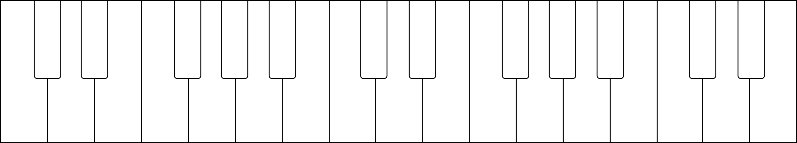
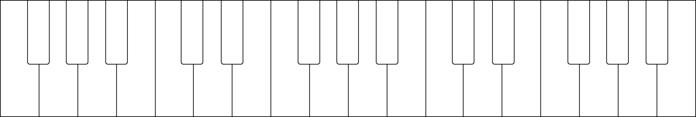

95. ארפג׳ים ב־D♭, A♭ ו־E♭ מז׳ור
כל הארפג׳ים שלמדנו עד כה משתמשים בתבניות אצבוע דומות:
| יד שמאל, קבוצה 1: 5 + 421 + 421; יד שמאל, קבוצה 2: 5 + 321 + 321 |
יד ימין: 123 + 123 + 5 |
האצבועים האלה מתאימים לארפג׳ים המתחילים בקלידים לבנים, וכן ל־G♭ מז׳ור. עם זאת, הם נעשים לא נוחים ברוב הארפג׳ים המתחילים בקלידים שחורים. מכיוון שהאגודל הוא האצבע הקצרה ביותר, פסנתרנים נמנעים בדרך כלל מהנחתו על קליד שחור בסולמות ובארפג׳ים. הקלידים השחורים ממוקמים עמוק יותר לכיוון מכסה הקלידים, ולכן פחות נוח להגיע אליהם באגודל. משום כך ארפג׳ים שהטוניקה שלהם על קליד שחור מתחילים באצבע שאינה 1, כדי שהאגודל יוכל לנגן קליד לבן במקום זאת. G♭ מז׳ור יוצא דופן: מכיוון שאין בארפג׳יו שלו קלידים לבנים, האגודל חייב לנגן קליד שחור.
D♭, A♭ ו־E♭ מז׳ור: אקורדי ״אוראו״ המשולשים
ייתכן שהבחנתם שלאקורדים המשולשים של D♭, A♭ ו־E♭ מז׳ור יש צורה דומה בפסנתר: do הוא קליד שחור, mi הוא קליד לבן ו־sol הוא קליד שחור. התבנית הזאת — קלידים שחורים בחוץ וקליד לבן באמצע — מזכירה לפסנתרנים רבים עוגיית אוראו טעימה. אף שזה אינו קשר רשמי, הוא עשוי לעזור לזכור ששלושת הסולמות האלה מהווים קבוצה וחולקים אותו אצבוע ארפג׳יו.
העיקרון הבסיסי הוא: אצבע 1 מנגנת את הקליד הלבן, ואצבעות 2 ו־4 מנגנות את הקלידים השחורים. כך מתקבלים אצבועי שתי האוקטבות האלה:
| יד שמאל: 21 + 421 + 42 | יד ימין: 4 + 124 + 124 |
ייתכן שבהתחלה קשה יותר לזהות את תבנית האצבוע ביד ימין, מפני שהארפג׳יו אינו מתחיל בתחילת התבנית. בארפג׳יו C מז׳ור ביד ימין, התבנית 1–2–3 תואמת בבירור ל־do–mi–sol, ואותה תבנית מתחילה שוב ב־do הבא. בארפג׳י ״אוראו״ תבנית האצבעות החוזרת ביד ימין היא 1–2–4, אך אצבע 1 חייבת לנגן את הקליד הלבן, mi. מכיוון שהארפג׳יו עצמו מתחיל ב־do, האצבוע מתחיל באמצע המחזור, באצבע 4. לאחר מכן תבנית 1–2–4 חוזרת לאורך יתר הארפג׳יו. כדי לחוות את הקשר בין האצבוע הזה לארפג׳ים שהטוניקות שלהם על קלידים לבנים, התחילו את ארפג׳יו D♭ ב־F ועלו שתי אוקטבות עד ל־F: 1–2–4–1–2–4–5.
אולי אין דרך לא נכונה לאכול אוראו, אבל יש דרכים לא נכונות לנגן ארפג׳יו ״אוראו״! השאירו את האגודל בקרם: אצבע 1 מנגנת את הקליד הלבן, ואצבעות 2 ו־4 מנגנות את הקלידים השחורים משני צדדיו. כדי לחוש את המנח כקבוצה מאוחדת, נגנו A♭, D♭ ו־F באצבעות 4–2–1 ביד שמאל, ו־F, A♭ ו־D♭ באצבעות 1–2–4 ביד ימין:
ארפג׳יו D♭ מז׳ור
ארפג׳יו D♭ מז׳ור, יד ימין
לפי יישום קפדני של תבנית האצבוע, הארפג׳יו היה מתחיל באצבע 4. בפועל, רוב הפסנתרנים מעדיפים להתחיל באצבע 2, כפי שמסומן בסוגריים. הדבר חל גם על ארפג׳י E♭, A♭ ו־B♭ מז׳ור ביד ימין.
כתבו את אצבוע הארפג׳יו על המקלדת הריקה שלהלן:

איור מקור ללא שינוי · Michael Clark, Baylor Piano Basics · CC BY-NC-SA 4.0.
ארפג׳יו D♭ מז׳ור, יד ימין
ארפג׳יו D♭ מז׳ור, יד שמאל
כתבו את אצבוע הארפג׳יו על המקלדת הריקה שלהלן:
איור מקור ללא שינוי · Michael Clark, Baylor Piano Basics · CC BY-NC-SA 4.0.
ארפג׳יו D♭ מז׳ור, יד שמאל
ארפג׳יו A♭ מז׳ור
ארפג׳יו A♭ מז׳ור, יד ימין
כתבו את אצבוע הארפג׳יו על המקלדת הריקה שלהלן:

איור מקור ללא שינוי · Michael Clark, Baylor Piano Basics · CC BY-NC-SA 4.0.
ארפג׳יו A♭ מז׳ור, יד ימין
ארפג׳יו A♭ מז׳ור, יד שמאל
כתבו את אצבוע הארפג׳יו על המקלדת הריקה שלהלן:
איור מקור ללא שינוי · Michael Clark, Baylor Piano Basics · CC BY-NC-SA 4.0.
ארפג׳יו A♭ מז׳ור, יד שמאל
ארפג׳יו E♭ מז׳ור
ארפג׳יו E♭ מז׳ור, יד ימין
כתבו את אצבוע הארפג׳יו על המקלדת הריקה שלהלן:
איור מקור ללא שינוי · Michael Clark, Baylor Piano Basics · CC BY-NC-SA 4.0.
ארפג׳יו E♭ מז׳ור, יד ימין
ארפג׳יו E♭ מז׳ור, יד שמאל
כתבו את אצבוע הארפג׳יו על המקלדת הריקה שלהלן:
איור מקור ללא שינוי · Michael Clark, Baylor Piano Basics · CC BY-NC-SA 4.0.
ארפג׳יו E♭ מז׳ור, יד שמאל
מקור: Michael Clark, Baylor Piano Basics. ©2026. עמוד המקור · CC BY-NC-SA 4.0, למעט חריגים פרטניים. תרגום עברי עצמאי, 16.10.2026; ניסוח וכיווניות הותאמו. אין אישור חסות.